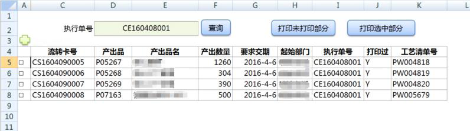
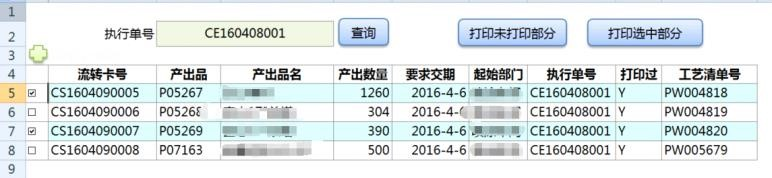

5.11 复选框多选列表的实现
Excel中实现如下界面效果，仿web界面的复选后，对选中的记录集进行操作。
(复选框要根据提数公式的结果集自动匹配)


实现思路和版本要求
- Excel2007以上
- VBA函数: DynamicCheckbox.
参数含义:
sht---列表所在的sheet页,
dataRng---列表数据区域,
chkboxCol--复选框所在列号:A,B,C,…..
valueCol--复选结果TRUE FALSE 所在列(复选框联动的结果列),
startRow--起始行号,
endRow--终止行号
Private Sub DynamicCheckbox(sht As Worksheet, dataRng As Range, chkboxCol As String, valueCol As String, startRow As Integer,endRow As Integer)
Application.ScreenUpdating = False
sht.CheckBoxes.Delete
Dim i As Integer
Dim rng As Range
For i = startRow To endRow
Set rng = Range(chkboxCol + CStr(i))
With sht.CheckBoxes.Add(rng.Left, rng.Top, rng.Width, rng.Height)
.Text = ""
.LinkedCell = valueCol + CStr(i)
End With
Next
Application.ScreenUpdating = True
dataRng.FormatConditions.Delete
Dim fml As String
fml = "=$" + valueCol + CStr(startRow) + "=TRUE"
Range("$" + valueCol + CStr(startRow)).Select
With dataRng.FormatConditions.Add(Type:=xlExpression, Formula1:=fml)
.Interior.PatternColorIndex = xlAutomatic
.Interior.Color = RGB(217, 254, 255)
End With
End Sub
Public Sub ClearChkbox()
Sheet1.CheckBoxes.Delete
End Sub
'调用示例:
Public Sub Query()
Dim oAdd As Object
Set oAdd = Application.COMAddIns("ESClient10.Connect").Object
oAdd.execQuery ("T1") '执行提数公式
Set oAdd = Nothing
Dim lrow As Integer
lrow = Range("C3").End(xlDown).Row '得到提数结果的最后一行
'调用生成复选框
If (lrow >= 5) Then
DynamicCheckbox Sheet1, Range("C5:I" + CStr(lrow)), "A", "B", 5, lrow
'没有数据的情况下,清除所有复选框
Else
ClearChkbox
End If
End Sub
'批量操作:(比如批量打印,要选到选中的记录)
Public Sub PrintChecked()
Dim i As Integer
Dim lrow As Integer
lrow = Range("C3").End(xlDown).Row
If (lrow <= 4) Then
MsgBox "无数据"
Exit Sub
End If
For i = 5 To lrow
If (Range("B" + CStr(i)) = "True") Then
Sheet2.Range("C1") = Sheet1.Range("C" + CStr(i))
Sheet2.PrintOut
Sheet1.Range("J" + CStr(i)) = "Y"
End If
Next
Dim oAdd As Object
Set oAdd = Application.COMAddIns("ESClient10.Connect").Object
If (oAdd.execUpdate("UPrnStatus") = True) Then MsgBox "打印完成"
Set oAdd = Nothing
End Sub
本节贡献者
@Meteor